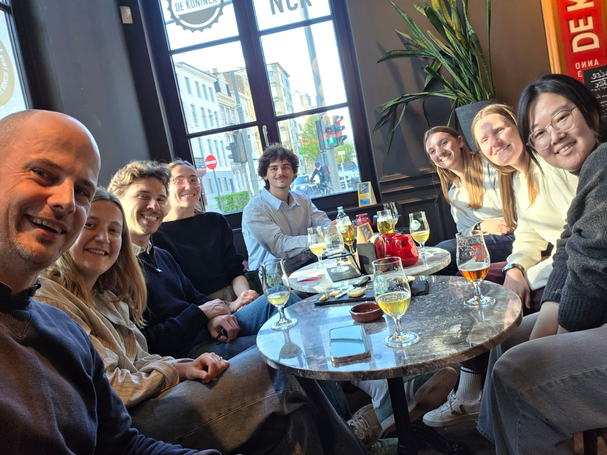

Responsible AI at the University of Antwerp
The Applied Data Mining Research Group focuses on Responsible AI, developing AI systems aligned with ethical values such as transparency and fairness, and their applications in business and society.
The group is part of the Department of Engineering Management at the University of Antwerp (Faculty of Business & Economics) and is led by Prof. Dr. David Martens, who also chairs the Antwerp Center on Responsible AI (ACRAI)

Explore